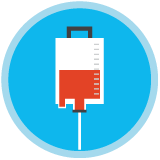

Coordinador del Código infarto
Este perfil existe en Unidades Médicas de Primer, Segundo y Tercer Nivel de Atención. Las funciones que desarrolla son:
Coordinador del Código infarto
Este perfil existe en Unidades Médicas de Primer, Segundo y Tercer Nivel de Atención. Las funciones que desarrolla son:
Supervisa que el servicio se encuentre debidamente organizado, equipado y funcional las 24 horas del día durante los siete días de la semana.
Elabora o valida el rol mensual actualizado de personal para la atención de Código infarto.

Verifica la disponibilidad de la sala de hemodinamia en los primeros 90 minutos de haberse activado el Código infarto en pacientes que acuden al servicio de Urgencias (tiempo puerta-balón).